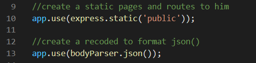
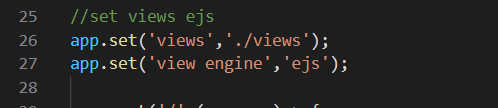

Для импорта модулей в ваш проект нужно использовать, ключевое слово require()
Для всех статических файлов нужно создать директорию и поместить туда все статические файлы (CSS,JavaScript i t.d.)
В свою очередь для bodyParser.json() парсит все данные которые приходят с клиента в формат json
Для начала нужно подключить данные модуль к нашему проекту. Позже создать директорию views и помещать туда все наши страницы.